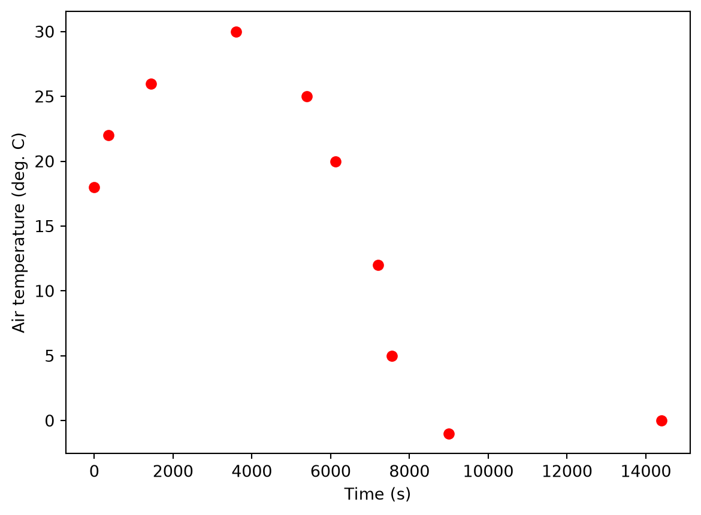
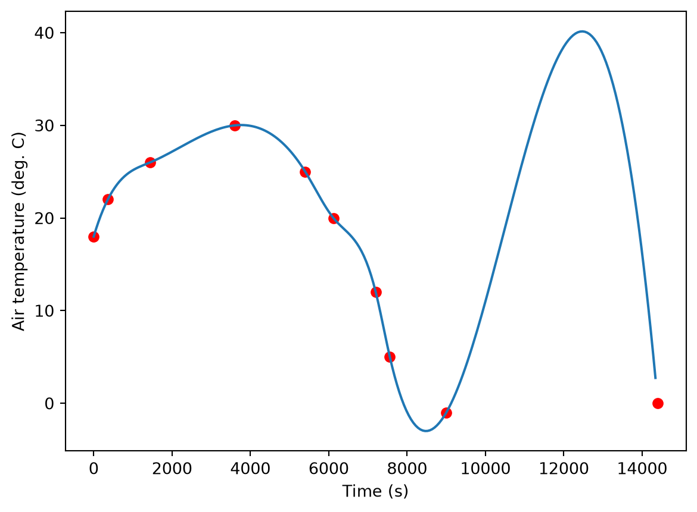
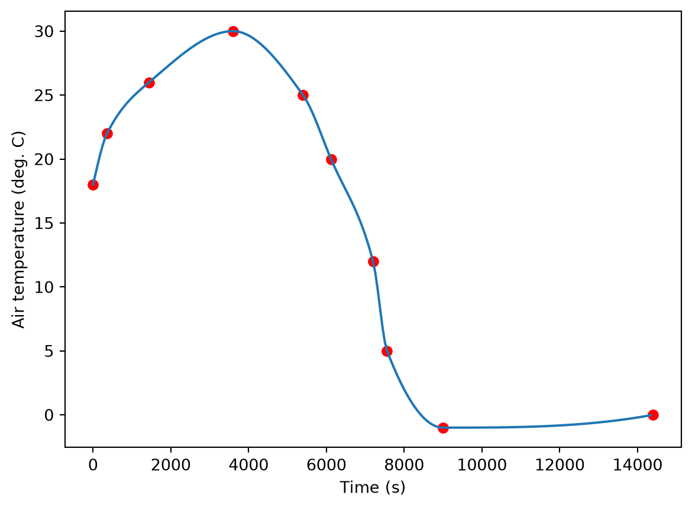

Some of the simple models presented as examples in this book or described in the problems could be solved analytically. In a sense, the those models didn’t really make use of the capabilities of solve_ivp(). But how about when model inputs are not constant? It’s easy to think of examples:
benzene volatilization when temperature (Henry’s law constant) and wind speed (mass transfer coefficient) vary,
microbial growth with changing pH, or
melting ice with changing ambient temperature.
Here an analytical solution is impossible. But a numerical approach works well, as long as care is taken in how the time-variable inputs enter the model.
10.1 Interpolation
We’ll use the ice melting model from an earlier problem in a demo.
Let’s say we have some measured temperature data that look like these:
import pandas as pdimport matplotlib.pyplot as pltmeas_temp = pd.read_csv('data/air_temp.csv')meas_temp['time_s'] = meas_temp.time *3600plt.plot(meas_temp.time_s, meas_temp.temp, 'ro')plt.xlabel('Time (s)')plt.ylabel('Air temperature (deg. C)')

We cannot just send those multiple discrete temperature values into our model function. Inside it, the rates() function needs to be able to access a temperature value for any time. We have to figure out the Python code for making that happen. The solution is interpolation, or the estimation of numeric values between measurements, e.g., estimating the temperature at 872 s from measurements at 700 and 900 s, and possibly others ealier and later. We create a Python interpolation function based on the measurements. Then when rates() needs a temperature, it can call the function, which can interpolate at any time.
Let’s start with some interpolation outside of the model to understand what is going on. We’ll use the make_interp_spline() function from the interpolate module in the scipy library.
The result is a function, not any specific values.
air_temp_func
<scipy.interpolate._bsplines.BSpline at 0x7ed0bd59c440>
To use it, it needs some x values (time here).
air_temp_func(0)
array(18.)
air_temp_func(5000)
array(27.31375942)
To see what the function does, we can call it with some high-resolution input and plot results.
import numpy as nptimes = np.arange(0, 4*3600, 60)
import matplotlib.pyplot as pltplt.plot(meas_temp.time_s, meas_temp.temp, 'ro')plt.plot(times, air_temp_func(times))plt.xlabel('Time (s)')plt.ylabel('Air temperature (deg. C)')

The function created by the make_interp_spline() function is smooth–we do not have any kinks or corners at the points. This is good for ODE solvers, which can struggle with kinks, such as those we would get with linear interpolation. But the spline seems to have a mind of its own between the last two time points. It overshoots in order to avoid a kink at or near the second-to-last point around 9,000 seconds.
While that interpolation function could be find with evenly spaced measurements, a safer alternative is the PchipInterpolator() function.
from scipy.interpolate import PchipInterpolator
It fits piecewise splines between points, and avoids overshooting.
plt.plot(meas_temp.time_s, meas_temp.temp, 'ro')plt.plot(times, air_temp_func2(times))plt.xlabel('Time (s)')plt.ylabel('Air temperature (deg. C)')

See the differences? This is the function we’ll use in our models with time-variable inputs.
10.2 Building the model function
There are multiple ways you could build a model function with time-variable inputs. In the approach we recommend, the time-variable inputs are collected together in a Pandas DataFrame. We’ll call it air_temp_dat in the model function below.
ice_mods_var.py
"""File: ice_mods_var.pyClass: Modelling 2026Author: Sasha D. hafnerDescription: Module with single ice melting model that accepts time-variable air temperature."""from scipy.interpolate import PchipInterpolatorfrom scipy.integrate import solve_ivpimport numpy as npdef meltv( mass_0, air_temp_dat, h, times, dens=920, temp_freeze=0, Hf=333000): """ Dynamic model for heat transfer to a melting block of ice, with disappearance of the ice over time. This version accepts time- variable air temperature. Parameters ---------- mass_0 : float Initial mass of ice (kg) air_temp_dat : DataFrame Air temperature over time as a Pandas DataFrame with columns `time` (s) and `temp` (deg. C) h : float Convection heat transfer coefficient (W/m2-K) times : list or tuple or array time in output (s) dens : float Ice density (kg/m3) temp_freeze : float Freezing point (deg. C) Hf : float Heat of fusion (J/kg) Returns ------- dictionary With elements 't' for time (s) and 'm' for ice mass remaining (kg) """# Make function for air temperature air_temp_func = PchipInterpolator(air_temp_dat.time, air_temp_dat.temp, extrapolate=False)# Define rates functiondef rates(t, mass_t):if mass_t <0: mass_t =0# Get current air temperature (deg. C) air_temp = air_temp_func(t)# Get current exposed upper area, assuming hemisphere area =2* np.pi * (3* mass_t / (2* np.pi * dens))**(2/3)# Heat flow (W) Q = area * h * (air_temp - temp_freeze)# Melting rate (kg/s) dmdt =-Q / Hfreturn dmdt res = solve_ivp( rates, t_span = [min(times), max(times)], y0 = [mass_0], t_eval = times )# Calculate temperature for output as well air_temp_t = air_temp_func(times)# Return user-friendly dictionary as results object out = {'time': res.t, 'air_temp': air_temp_t,'ice_mass': res.y[0, :] }return out
Note that we have excluded the possibility of extrapolation. That is done here:
plt.plot(predv['time'] /3600, predv['air_temp'])plt.xlabel('Time (s)')plt.ylabel('Air temperature (deg. C)')
That looks plausible. As we should have been able to predict, melting stops when the temperature is close to the freezing point.
Because our state variable, ice mass, reflects the cumulative effect of a time-variable melting rate, it can be hard to see any effect of temperature variation. Let’s look at differences instead.
The basic approach used in the melt_var() model can be used for any kind of model input that is used as a scalar in the rates() function. Here it was an input variable, but the same approach could be used for a parameter.